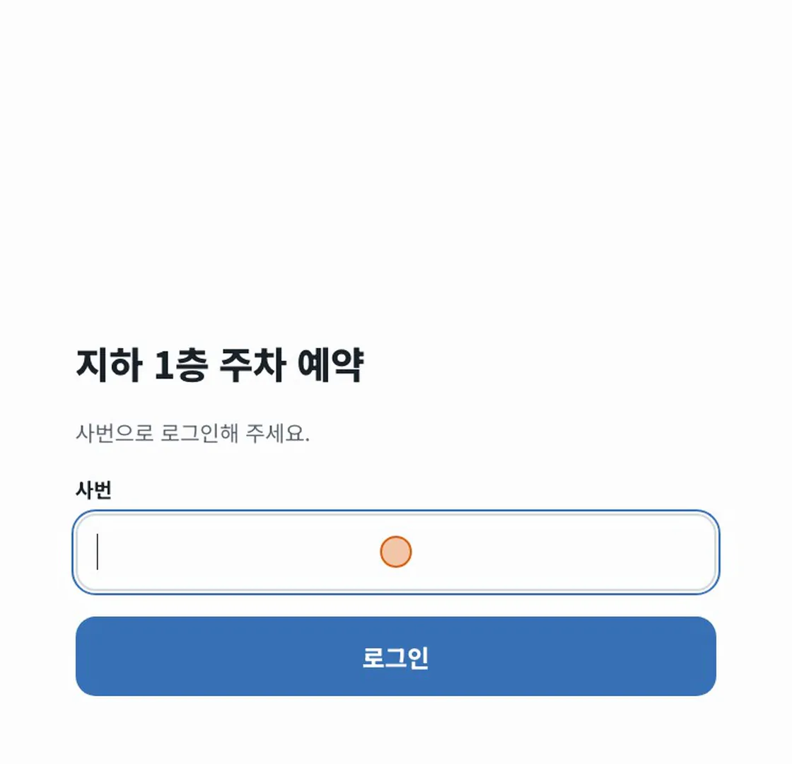
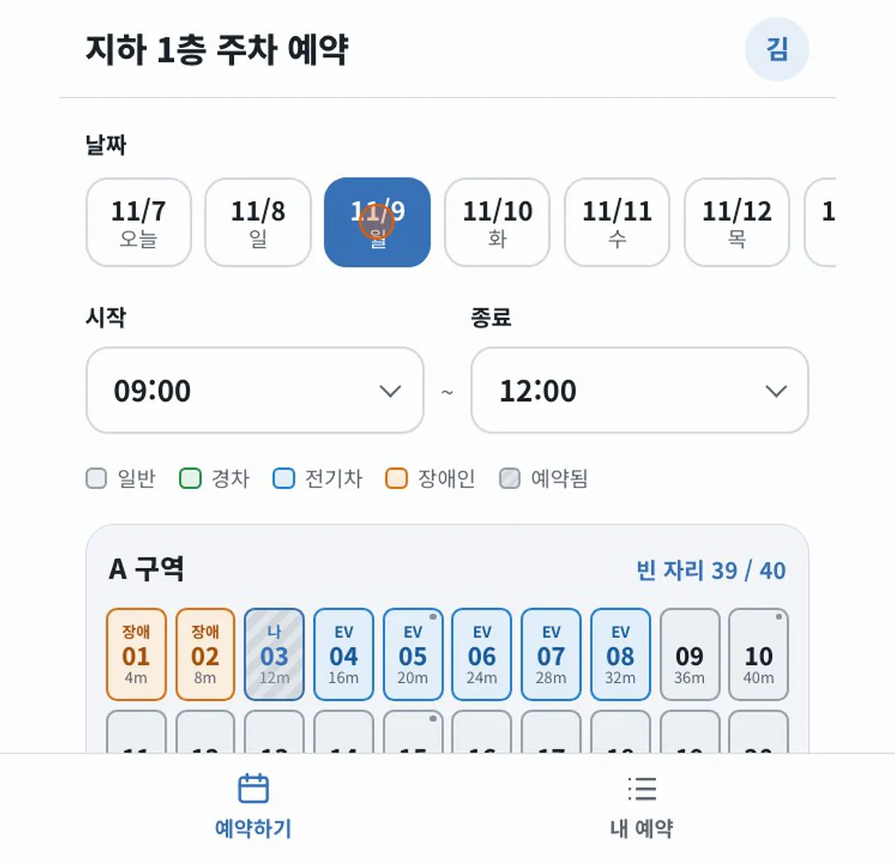
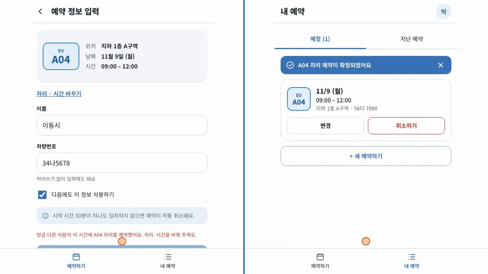
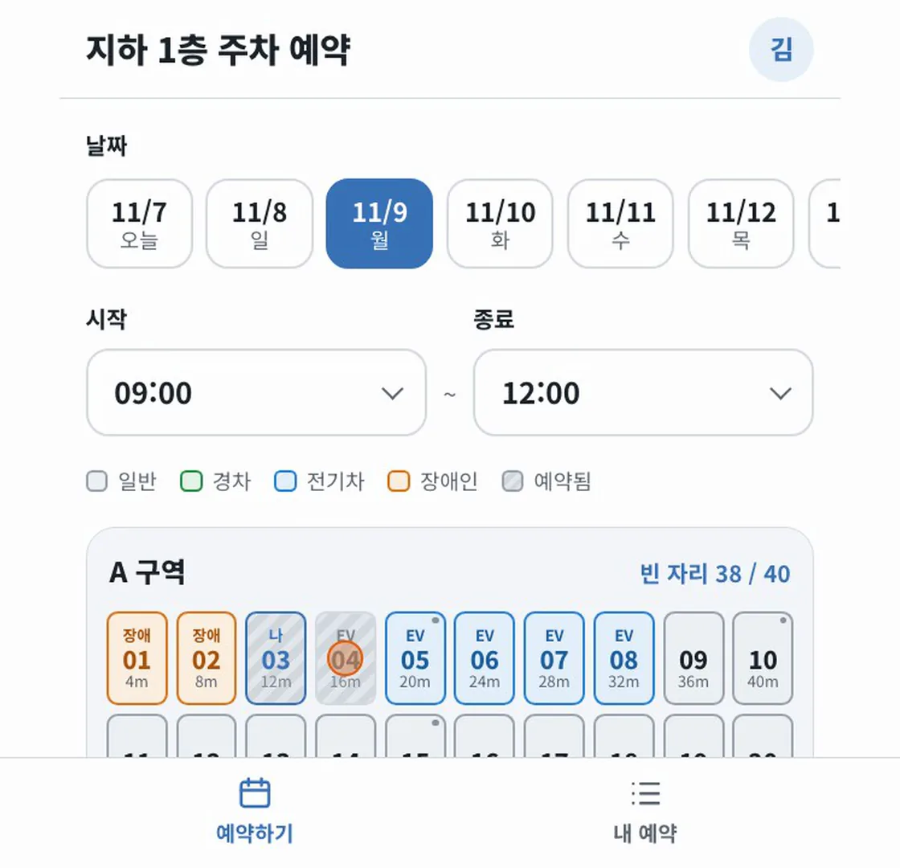
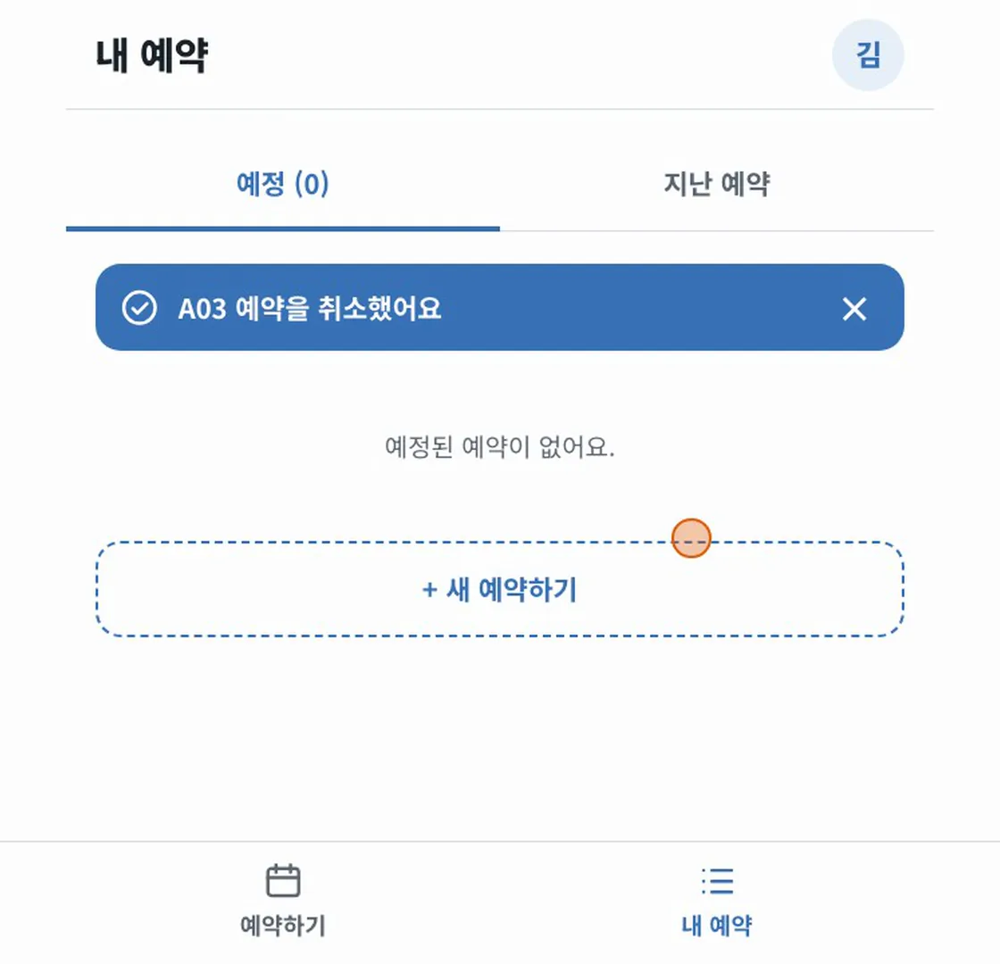
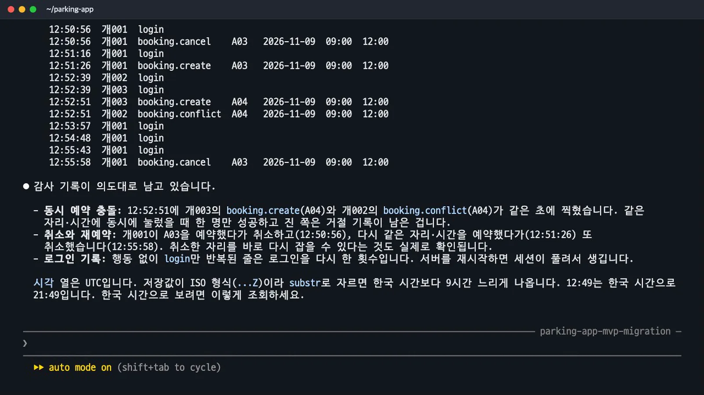

구현한 앱에 로그인해 예약하고, 두 사람이 같은 자리를 동시에 확정합니다. 다른 사람에게 보이는 예약 상태와 본인 취소를 확인한 뒤 SQLite 감사 기록에서 성공과 충돌을 대조합니다.
무엇을 · 왜#
이 장에서는 테스트 결과를 실제 사용 흐름과 연결합니다. Claude Code로 실제 구현에서 전체 76개 테스트를 통과했지만, 브라우저의 안내와 저장된 기록도 직접 확인합니다. 예약 성공뿐 아니라 충돌한 사람에게 어떤 안내가 나오는지도 봅니다.
앱은 Claude Code로 실제 구현의 개발 서버가 실행된 상태여야 합니다. 기록의 주소는 다음과 같습니다.
http://localhost:5173
녹화에서는 11/9 09:00–12:00을 선택했습니다. 따라 할 때는 예약 가능한 미래 날짜를 고르세요. 두 사람의 동시 예약 실습에서는 서로 같은 날짜·시간을 선택해야 합니다.
따라 하기#
1. 로그인하고 A03 예약#
브라우저에서 접속 주소를 열고 사번 개001로 로그인합니다. 사번 로그인은 MVP에 없던 화면입니다. 로그인 뒤에는 시안과 MVP에서 보았던 배치도가 이어집니다.

날짜와 시간을 고르고 A03을 누릅니다. 녹화에서는 예약 정보에 저장된 이름과 차량번호가 미리 채워져 있었습니다. 자신의 입력 내용을 확인하고 「예약 확정」을 누릅니다.
「A03 자리 예약이 확정되었어요」라는 안내를 확인합니다. 배치도로 돌아가면 A03에 「나」가 표시되고 빈 자리는 39/40입니다.

확인할 것: 로그인한 사용자, 선택한 자리·시간, 예약 결과를 순서대로 확인합니다. 이름과 차량번호가 미리 채워진 경우에도 입력 내용을 읽어 보세요.
2. 두 사람이 A04를 동시에 확정#
서로 다른 브라우저 또는 일반 창과 시크릿 창을 준비합니다. 각각 개002, 개003으로 로그인합니다. 같은 창에서 사용자만 바꾸는 방식으로는 두 사람이 동시에 확정하는 상황을 확인할 수 없습니다.
| 준비 | 왼쪽 화면 | 오른쪽 화면 |
|---|---|---|
| 사번 | 개002 |
개003 |
| 자리 | A04 | A04 |
| 녹화의 날짜·시간 | 11/9 09:00–12:00 | 11/9 09:00–12:00 |
| 확정 전 상태 | 예약 정보 입력 완료 | 예약 정보 입력 완료 |
두 화면에서 같은 순간에 「예약 확정」을 누릅니다. 녹화에서는 오른쪽 개003이 성공했고 왼쪽 개002는 충돌 안내를 받았습니다.

| 사용자 | 실제 안내 |
|---|---|
개003 |
「A04 자리 예약이 확정되었어요」 |
개002 |
「방금 다른 사람이 이 시간에 A04 자리를 예약했어요. 자리·시간을 바꿔 주세요.」 |
핵심은 특정 사용자가 항상 이기는 것이 아니라 한 사람만 성공하는지입니다. MVP에서는 브라우저의 잠금에 기대었지만 이번 구현은 서버 트랜잭션과 DB 트리거가 겹침을 막습니다. Claude Code로 실제 구현의 두 사람 테스트에서도 201 성공 1건·409 충돌 1건과 활성 예약 1행을 확인했습니다.
확인할 것: 한쪽 성공과 다른 쪽 충돌 안내를 함께 봅니다. 충돌한 사용자는 안내대로 자리나 시간을 바꿔야 합니다.
3. 남의 예약은 어떻게 보이나요?#
개001의 화면으로 돌아가 배치도를 확인합니다. A04에는 빗금과 「예약됨」 표시가 보이고, 예약자의 이름은 나타나지 않습니다. 해당 자리를 눌러 선택할 수도 없습니다. A03과 A04가 예약된 상태이므로 빈 자리는 38/40입니다.

이 화면에서는 다른 사람의 예약 상태가 반영되고 선택이 막히는 것을 확인합니다. 타인 예약 취소를 서버가 거절하는지는 별도 테스트에서 403 응답으로 확인했습니다. 단추가 보이지 않는 것과 API가 요청을 거절하는 것은 각각 확인할 항목입니다.
4. 내 예약 취소#
개001의 내 예약 → 취소하기로 이동합니다. 확인 창에는 다음 문구가 나옵니다.
「A03 예약을 취소할까요? 취소하면 다른 사람이 바로 예약할 수 있어요.」

「예약 취소」를 선택하면 「A03 예약을 취소했어요」라는 결과가 나옵니다. 구현은 예약 행을 지우지 않고 상태를 cancelled로 바꿉니다. 자리는 다시 예약할 수 있게 하고 취소한 사실은 남기는 방식입니다.
감사 기록 조회#
Claude Code로 돌아와 !로 셸 명령을 실행합니다. DB 파일은 data/parking.db입니다. 아래 두 명령은 실습 안내의 조회 명령 그대로입니다.
! sqlite3 -header -column data/parking.db "select substr(at,12,8) as 시각, actor_emp_no as 사번, action, spot_id as 자리, date, start, end from audit_log where id > (select max(id)-14 from audit_log) order by id"
! sqlite3 -header -column data/parking.db "select datetime(at,'+9 hours') as 시각, actor_emp_no as 사번, action, spot_id as 자리, date, start, end from audit_log order by id desc limit 15"
첫 명령은 최근 14줄을 ID 순으로 보여 줍니다. 두 번째는 최근 15줄을 역순으로 보면서 저장 시각에 9시간을 더합니다. 저장 시각은 UTC이고, 한국 시간으로 확인할 때는 두 번째 명령의 변환을 사용합니다.

| 기록의 action | 읽는 방법 |
|---|---|
login |
해당 사번이 로그인 |
booking.create |
예약 생성 |
booking.cancel |
예약 취소 |
booking.conflict |
겹치는 예약 요청이 거절됨 |
녹화 기록에는 같은 초인 12:52:51(UTC)에 개003의 A04 생성과 개002의 A04 충돌이 남았습니다. 두 화면에서 보았던 성공과 거절을 기록에서도 확인한 것입니다. 감사 기록에서는 사번·자리·날짜·시작·종료 시간을 함께 대조합니다.
확인할 것: 성공한 예약만 찾지 말고 충돌과 취소도 찾습니다. 화면에서 본 사람과 자리가 기록과 맞는지 확인하세요. 같은 초의 기록은 녹화 결과이며, 실습 때의 시각은 달라집니다.
단계별 걸린 시간#
아래 시간은 이번 녹화에서 요청이 완료되기까지 걸린 시간입니다. 사람이 내용을 읽고 조작하는 시간까지 모두 합친 학습 시간과는 다릅니다.
| 단계 | 한 일 | 걸린 시간 |
|---|---|---|
| 디자인 P1 | 회색조 와이어프레임 3화면 | 약 1분 45초 |
| 디자인 P2 | 시안과 클릭 연결 | 3분 26초 |
| 디자인 P3 | 댓글로 출구·거리 수정 | 1분 15초 |
| MVP P4 | PNG·CSV로 공유 저장소·AI 앱 생성 | 약 5분 50초 |
| 계획 P5 | 질문 2개와 101줄 계획 | 약 2분 20초 |
| 구현 승인 뒤 | React·Express·SQLite, 테스트 75개 | 12분 28초 |
| 테스트 P6 | 동시 예약 추가, 전체 76개 통과 | 2분 39초 |
| 실행 P7 | 포트 충돌 해결과 서버 실행 | 35초 |
단계 전체 녹화는 디자인 약 19분, MVP 약 19분(앱 로딩이 늦어진 시간 포함), Claude Code 약 35분입니다.
어디서 멈춰도 되는가#
| 필요한 결과 | 멈출 수 있는 단계 | 판단할 때 볼 한계 |
|---|---|---|
| 화면·흐름·문구 합의와 의견 수렴 | 디자인 | 선택한 데이터가 다음 화면에 이어지지 않음 |
| 팀 안 수십 명이 시트 수준 데이터를 쓰고 링크 공유 | MVP | 플랫폼 권한·사용량에 의존, 동시성 검증과 자체 감사 기록·테스트 부족 |
| 동시성·기록·로그인·테스트·사내 서버 배포가 필요 | 실제 구현으로 진행 | 이번 실습은 로컬 실행까지이며 운영 전 남은 일 확인 필요 |
MVP가 충분한지는 사용자 수만으로 정하지 않습니다. 같은 자리를 동시에 예약할 수 있는지, 기록이 필요한지, 사내 인증을 써야 하는지에 따라 판단합니다. 이번 테스트 수나 생성 시간을 다른 앱의 성능·개발 기간으로 그대로 적용하지 마세요.
남은 일#
| 항목 | 현재 한계와 다음 작업 |
|---|---|
| 사번 도용 | 사번을 알면 다른 사람 행세를 할 수 있습니다. 실제 운영 전 SSO·비밀번호 등으로 인증을 보강하세요 |
| 노쇼 자동 취소 | 「시작 30분 후 자동 취소」는 디자인의 예시이며 구현되지 않았습니다. 운영 규칙과 입차 감지·자동 처리 방식을 정하세요 |
| 관리 화면 | 관리자·감사 조회 화면은 없습니다. 현재는 SQLite 명령으로 기록을 봅니다 |
| 말로 예약 | 서버의 실제 Claude 호출은 가짜 응답으로만 시험했습니다. .env에 API 키를 넣고 실제 호출도 검증하세요 |
| 로그인 유지 | SESSION_SECRET이 없는 실행에서는 재시작하면 로그인이 풀립니다 |
| 사내 배포 | 이번 기록은 로컬 실행까지입니다. 사내 환경에 맞는 배포를 이어서 준비해야 합니다 |
이 교재에서는 파일을 넘기며 화면에서 동작으로, 동작에서 서버 규칙과 검증으로 이어 갔습니다. 다음 교재 Claude Code × AI-DLC 핸즈온에서는 별도 예제인 VoiceParking으로 요구사항 질문·승인·구현을 진행합니다. 팀 규칙과 설계 문서를 단계마다 남기는 흐름부터 보고 싶다면 레벨 2 개요로 이동합니다.